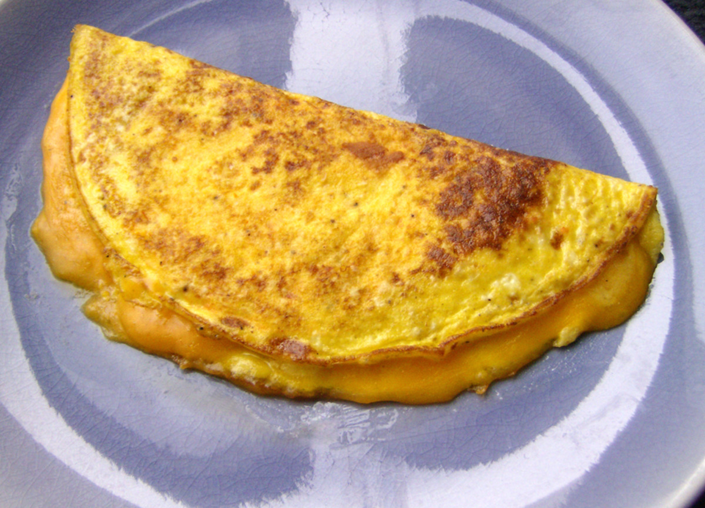

Cheese Omelet

Description
A cheese omelet is a quick and delicious breakfast that requires just a few ingredients.
Light, fluffy eggs wrap around melted cheese to create a warm and satisfying meal.
This recipe is simple to make but versatile—you can add vegetables, herbs, or meats for endless variations.
Perfect for busy mornings or a light lunch.
Ingredients
- 3 large eggs
- 2 tbsp milk
- 1 tbsp butter
- 1/4 cup shredded cheese (cheddar, mozzarella, or your choice)
- Salt and pepper, to taste
Steps
- Crack the eggs into a bowl, add milk, salt, and pepper. Whisk until smooth.
- Heat butter in a nonstick skillet over medium heat.
- Pour in the egg mixture and cook until the edges start to set.
- Sprinkle cheese evenly over the eggs.
- Fold the omelet in half and cook for another 1–2 minutes.
- Slide onto a plate and serve hot.
Back to recipes